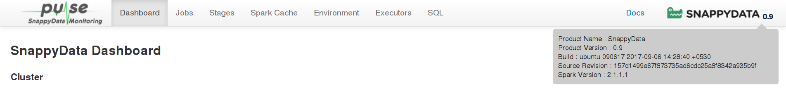
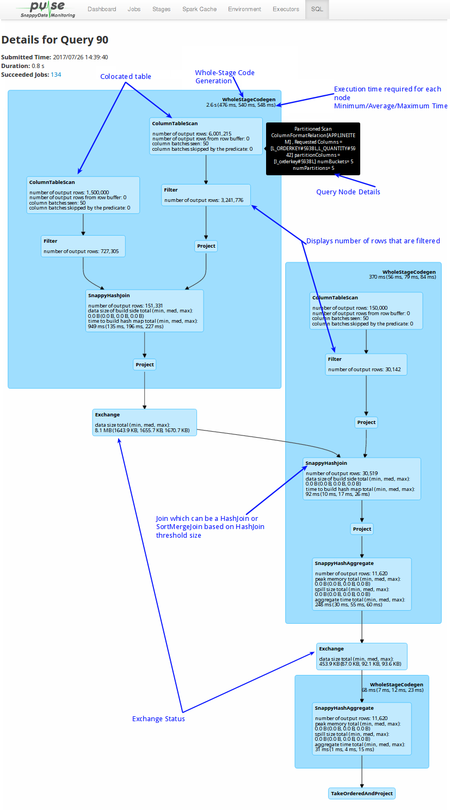

SnappyData Pulse
SnappyData Pulse is a monitoring system that gives you a high-level overview of the status and performance of the cluster. It provides a simple widget based view which helps you easily navigate and monitor your cluster.
To access the SnappyData Pulse, start your cluster and open http:<leadhost>:5050/dashboard/ in your web browser.
<leadhost> is the hostname or IP of the lead node in your cluster.
The top-right side of the page displays the date and time when the Dashboard was last updated.
The following topics are covered in this section:
The Dashboard
The Dashboard offers the following capabilities and benefits:

The Dashboard offers the following capabilities and benefits:
Cluster Statistics

-
Cluster Status Displays the current status of the cluster.
Status Description Normal All nodes in the cluster are running Warning Some nodes in the cluster are stopped or unavailable -
CPU Usage Displays the average CPU utilization of all the nodes present in the cluster.
-
Memory Usage Displays the collective usage of on-heap and off-heap memory by all nodes in the cluster.
-
JVM Heap Usage Displays the collective JVM Heap usage by all nodes in the cluster.
Member Statistics

-
Members Count Displays the total number of members (leads, locators and data servers) that exist in the cluster. The tooltip displays the count for each member.
-
Members Status Displays the status of the members, which can be either Running or Stopped.
-
Description A brief description of the member is displayed in Member column. You can view the detailed description for the member by clicking on the arrow next to the member name. The description provides details of the member host, working directory, and process ID.
-
Type Displays the type of member, which can be lead, locator or data server.
-
CPU Usage The CPU utilized by the member's host.
-
Memory Usage Members collective Heap and Off-Heap Memory utilization along with Total Memory.
-
Heap Memory Displays the total available heap memory and used heap memory. You can view the detailed description of the member's heap storage, heap execution memory, utilizations along with JVM Heap utilization by clicking on the arrow next to the member name.
-
Off-Heap Memory Usage Displays the members total off-heap memory and used off-heap memory. You can also view the member's off-heap storage and off-heap execution memory and utilizations by clicking on the arrow next to the member name.
Table Statistics

-
Tables Count Displays the total number of data tables present in the cluster. The tooltip displays the count for the row and column tables.
-
Name Displays the name of the data table.
-
Storage Model Displays the data storage model of the data table. Possible models are ROW and COLUMN.
-
Distribution Type Displays the data distribution type for the table. Possible values are PARTITION, PARTITION_PERSISTENT, PARTITION_REDUNDANT, PARTITION_OVERFLOW, REPLICATE, REPLICATE_PERSISTENT, REPLICATE_OVERFLOW etc.
-
Row Count Displays the row count, which is the number of records present in the data table.
-
Memory Size Displays the heap memory used by data table to store its data/records.
-
Total Size Displays the collective physical memory and disk overflow space used by the data table to store its data/records.
SQL Page

-
Colocated: When colocated tables are joined on the partitioning columns, the join happens locally on the node where data is present, without the need of shuffling the data. This improves the performance of the query significantly instead of broadcasting the data across all the data partitions.
-
Whole-Stage Code Generation: A whole stage code generation node compiles a sub-tree of plans that support code generation together into a single Java function, which helps improve execution performance.
-
Per node execution timing: Displays the time required for the execution of each node. If there are too many rows that are not getting filtered or exchanged,
-
Pool Name: Default/Low Latency. Applications can explicitly configure the use of this pool using a SQL command ‘set snappydata.scheduler.pool=lowlatency’.
-
Query Node Details: Move the mouse over a component to view its details.
-
Filter: Displays the number of rows that are filtered for each node.
-
Joins: If HashJoin puts pressure on memory, you can change the HashJoin size to use SortMergeJoin to avoid on-heap memory pressure.
Jobs Page

-
Status: Displays the status of the job.
-
Stages: Click on the Stage to view its details. The table displays the time taken for completion of each stage.
Stages Page

-
On this page, you can view the total time required for all the tasks in a job to complete.
-
You can view if any tasks have taken a long time to complete. This may occur in case of uneven data distribution.
-
Scheduler Delay indicates the waiting period for the task. Delays can be caused if there are too many concurrent jobs.
-
Shuffle reads and writes: Shuffles are written to disk and take a lot of time to write and read. This can be avoided by using colocated and replicated tables. You can use high-performance SSD drives for temporary storage (spark.local.dir) to improve shuffle times.
-
Number of parallel tasks: Due to concurrency, multiple queries may take cores and a particular query may take longer. To fix this, you can create a new scheduler and assign appropriate cores to it.
-
GC time: Occasionally, on-heap object creation can slow down a query because of garbage collection. In these cases, it is recommended that you increase the on-heap memory (especially when you have row tables).